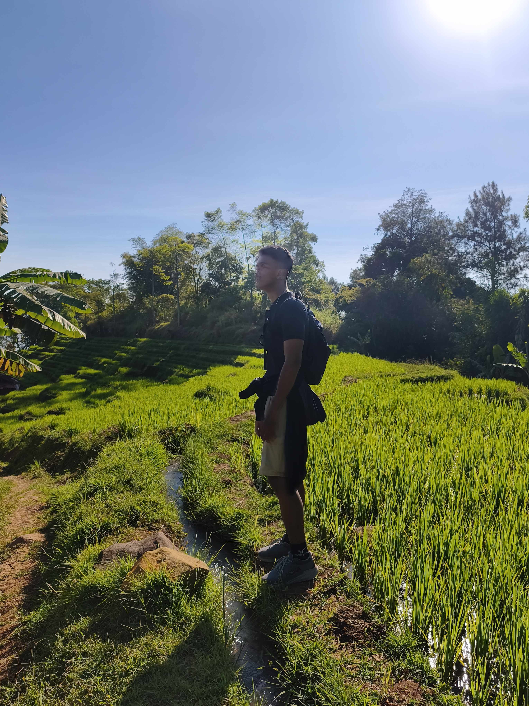

Selamat datang di portofolio saya!
Tidak semua proses menghasilkan error harus diakhiri; terkadang, kita hanya perlu memperbaiki logika, mencoba kembali, dan percaya bahwa setiap kegagalan adalah bagian dari proses menuju versi terbaik diri sendiri.
“Berpikir dengan logika, berkarya dengan makna.”
| Bidang | Deskripsi | Tools/alat |
|---|---|---|
| Melukis | Saya memiliki kegemaran melukis sehingga saya senang dengan aktivitas tersebut | Ibis paint, Corel, & Alat-alat basic (Kertas, cat lukis, dll) |
| Fotografi | Memotret dengan perhitungan (Rule of third, triangle exposure, double exposure) | Kamera Cannon, Gimbal, Adobe Photoshop |
| Mendesain | Saya mampu mendesain sesuai masukan namun kurang dari kreatifitas sehingga harus mencari referensi | Canva, Adobe illustrator, Figma, |